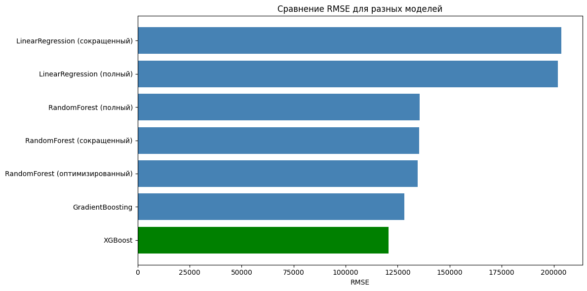

Лабораторная работа №5
Тема: Предсказание цен на недвижимость с применением Scikit-Learn
Гугл коллаб
Цель работы
Освоить методы регрессионного анализа с использованием библиотеки Scikit-Learn. Научиться оценивать качество моделей с помощью метрик MAE, MSE, RMSE. Исследовать альтернативные алгоритмы (Gradient Boosting, XGBoost). Провести оптимизацию гиперпараметров Random Forest. Изучить способ интеграции обученной модели в веб-сервис.
Ход работы
- Загружены данные по ценам на недвижимость в округе Кинг — 21613 наблюдений, 21 переменная.
- Данные разделены на обучающую (15129 строк, 16 признаков) и тестовую (6484 строк) выборки.
- Выполнена предобработка: пропусков нет, все признаки числовые (int64, float64).
- Обучены базовые модели:
- Linear Regression
- Random Forest (n_estimators=10)
- Рассчитаны метрики MAE и RMSE, построены scatter-графики "Реальная vs Предсказанная цена".
- Выполнен анализ важности признаков.
Результаты базовых моделей:
| Модель | MAE | RMSE |
|---|---|---|
| Linear Regression | 126852.51 | 201883.24 |
| Random Forest (базовый) | 75039.37 | 141105.01 |
Random Forest визуально и метрически превзошел линейную регрессию.
Самостоятельная работа
1. Исключение незначащих признаков
Определены 5 наименее важных признаков (по feature_importances_):
| Признак | Важность |
|---|---|
| Площадь подвала | 0.007123 |
| Состояние | 0.003868 |
| Спальни | 0.003849 |
| Количество этажей | 0.002792 |
| Год реновации | 0.002428 |
Сравнение RMSE до и после удаления:
| Модель | RMSE (полный) | RMSE (сокращенный) | Изменение |
|---|---|---|---|
| Linear Regression | 201883.24 | 203678.30 | +1795.06 (+0.89%) |
| Random Forest | 135516.61 | 135282.18 | -234.44 (-0.17%) |
Вывод: удаление незначащих признаков незначительно повлияло на качество. Linear Regression немного ухудшился, Random Forest — немного улучшился.
2. Оптимизация Random Forest
После подбора параметров (n_estimators=300, max_depth=20, min_samples_split=5, min_samples_leaf=2, max_features='sqrt'):
| Модель | RMSE |
|---|---|
| Random Forest (сокращенный) | 135282.18 |
| Random Forest (оптимизированный) | 134611.38 |
Улучшение RMSE составило 670.80.
3. Исследование других моделей
Обучены GradientBoostingRegressor и XGBoost.
Сводная таблица результатов:
| Модель | RMSE |
|---|---|
| XGBoost | 120573.91 |
| GradientBoosting | 128183.01 |
| RandomForest (оптимизированный) | 134611.38 |
| RandomForest (сокращенный) | 135282.18 |
| RandomForest (полный) | 135516.61 |
| LinearRegression (полный) | 201883.24 |
| LinearRegression (сокращенный) | 203678.30 |
Визуализация: построен bar chart сравнения RMSE всех моделей.

Вывод: XGBoost показал наилучший результат (RMSE = 120573.91). GradientBoosting занял второе место (RMSE = 128183.01). Линейная регрессия ожидаемо показала наихудший результат.
4. Интеграция модели в веб-сервис — пошаговый алгоритм (FastAPI)
-
Сохранить модель:
python import joblib joblib.dump(xgb_model, 'model.pkl') -
Создать FastAPI-приложение (
main.py), загрузить модель. -
Описать Pydantic-схему для признаков недвижимости.
-
Создать POST
/predict: принять JSON, преобразовать в DataFrame, вызватьmodel.predict(), вернуть цену. -
Упаковать в Docker, развернуть на сервере.
Выводы
- Освоены методы регрессии в Scikit-Learn, метрики MAE, MSE, RMSE.
- XGBoost показал наилучший результат (RMSE = 120573.91), улучшив базовый Random Forest на ~14942.
- GradientBoosting занял второе место (RMSE = 128183.01).
- Оптимизация Random Forest дала небольшое улучшение (~670 RMSE).
- Удаление незначащих признаков практически не повлияло на качество моделей, но сократило количество признаков с 15 до 10.
- Линейная регрессия показала наихудший результат, так как неспособна улавливать нелинейные зависимости.
- Изучен способ интеграции обученной модели в веб-сервис через FastAPI.